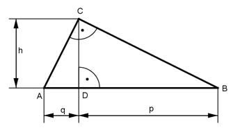

Pythagoras Aufgabe 64 Von einem rechtwinkligen Dreieck sind die Hypotenusenabschnitte q = 4 cm und p = 5 cm bekannt. Berechnen Sie die Länge der Katheten a und b in cm, und die Fläche A in cm².  Höhensatz: h² = q * p h² = 4 cm * 5 cm = 20 cm² |√ h = 4,5 cm Satz von Pythagoras im Dreieck DBC: BC² = h² + p² BC² = 4,5² cm² + 5² cm² = 45,25 cm² |√ BC = a = 6,7 cm Satz von Pythagoras im Dreieck ADC: AC² = h² + q² AC² = 4² cm² + 4² cm² = 36,25 cm² |√ AC = b = 6 cm AC * BC 6 cm * 6,7 cm A = ---------- = --------------- = 20,1 cm² 2 2